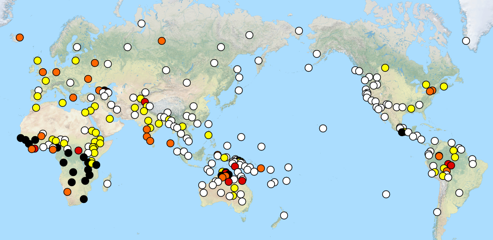
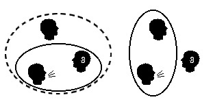
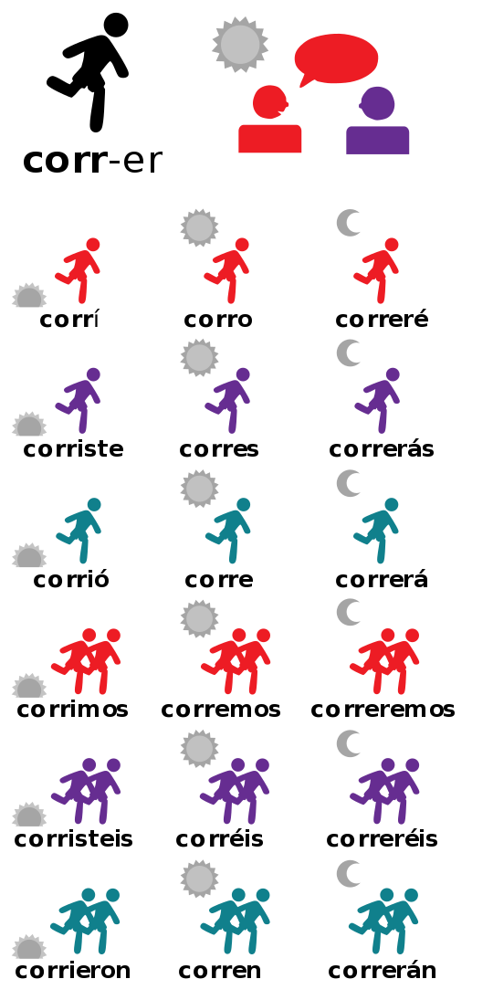

Week 6 構詞句法
本週主題
- Morpho-Syntax (II)
Syntax vs Grammar
- 句法（syntax）是語言學中研究句子結構的學科。構詞語法則較從世界語言的角度，探究 grammar 特徵 (構詞句法互動)。(注意這裏的 grammar 不是教學意義上的)
Grammatical Features of Languages
grammatical features \(\approxeq\) grammatical categories
Grammatical features are the properties of languages that are used to describe the grammatical structure of sentences.
上週提到可以利用 Grammatical Category 來看看不同的語言有哪些語法特徵。

This map from the World Atlas of Language Structures Online shows the distribution of gender as a grammatical feature in 256 languages: white = none; yellow = two; orange = three; red = four; black = five or more.
Grammatical Features of World Languages
我們來分別看看頁面中右下的 grammatical features，可以看到有很多種關聯到名詞、動詞、一般等語法特徵。以下是比較重要的幾種。
- 這個參考資源會用上！語言學的註釋縮寫
Some Noun-related Grammatical Features
Case
Case is a grammatical feature of nouns, pronouns, and certain other words in some languages, which expresses the grammatical relationship between the word and other words in the clause.
From Persian (2) to Tsez (64) cases
- 英文有幾個格？
Gender
Number

Classifier
A classifier is a word or affix that accompanies nouns and can be considered to “classify” a noun depending on the type of its referent.
在中文，(量詞、分類詞)、(數量詞)常常混用。
- 語意分類是可能的嗎？
Genetive construction
possessive construction
Some Verb-related Grammatical Features
Tense-Aspect-Mood (TAM)
時態、時貌、情態
- In some languages, evidentiality (whether evidence exists for the statement, and if so what kind) and mirativity (surprise) may also be included.
語法特徵的語言單位實現，不見得是單一的詞彙，也不見得是 1-1 的關係。 例如：English -s is used for the third person singular present tense. 反過來說，許多印歐語言也沒有明顯方式來區分 tense 與 aspect。
- Evidentiality
Clusivity
inclusive "we" and exclusive "we"

Conjugation
動詞的屈折變化 (conjugation) ：以便能夠與主語的人稱、數量、性別、時態、情態等不同的語法特徵相符合。
例如：
English的動詞屈折變化，以be為例：- I am
- you are
- he/she/it is
- we are
- you are
- they are
注意 conjugation 這個詞只用在動詞的屈折變化，其他詞類如名詞或形容詞的屈折變化則稱 declension

練習
請解釋 Japhug Rgyalrong 語言中的 associated motion 特徵？

練習
antipassive voice, 和中文的 middle Voice？
本週作業
（下週春節放假） 兩週時間完成；個人或團體形式。
- 選擇一個
grammatical feature，並找出至少三個語言有這個特徵，並說明這個特徵的意義。(注意維基上的[dubious-discuss], 或 [citation needed] 訊息要查證) - 設計成一個題目(可當成期末作業的第一版)，附上解答與解釋。